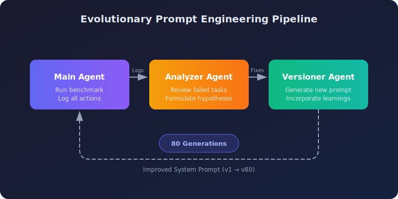
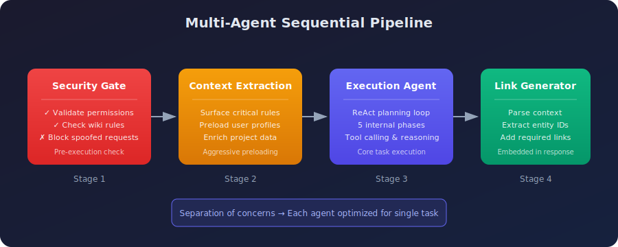
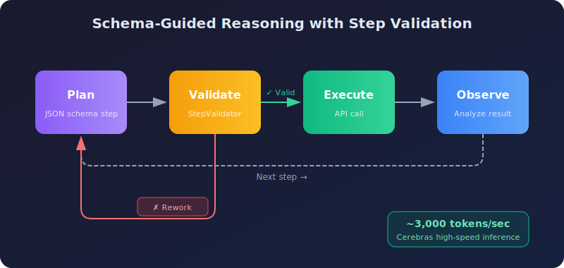
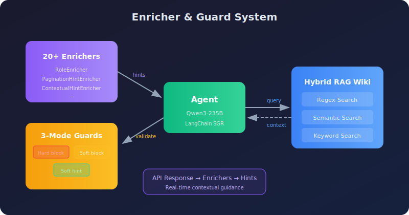
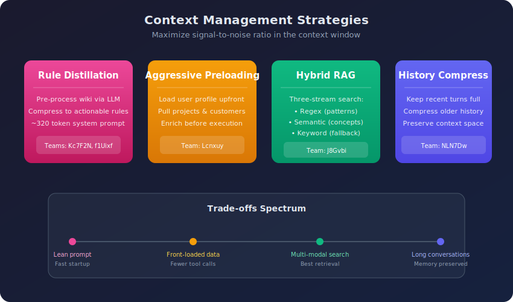
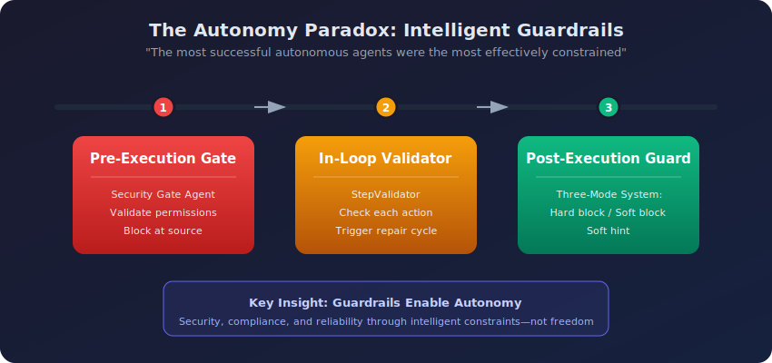

Enterprise RAG Challenge 3: Winning Approaches for Autonomous AI Agents
The Enterprise RAG Challenge 3 (ECR3) just concluded, and the results reveal powerful insights for building production-grade AI agents. Out of 524 teams and over 341,000 agent runs, only 0.4% achieved a perfect score—making this one of the most demanding benchmarks in the field. With the leaderboard and solution write-ups now public, I analyzed the winning approaches to distill the patterns that separated top performers from the rest.
This article breaks down what ECR3 is, what tasks were involved, and how the best teams solved them.
TL;DR: Multi-agent pipelines with specialized agents outperformed monolithic designs. The top team used evolutionary prompt engineering running through 80+ automated iterations. Winners built intelligent guardrails (pre-flight security checks, in-loop validators, post-execution guards) and invested heavily in context strategy—quality over quantity.
What is the Enterprise RAG Challenge?
The Enterprise RAG Challenge 3 is a large-scale, crowdsourced research project that tests how autonomous AI agents can solve complex business tasks. Unlike static benchmarks, ECR3 uses the Agentic Enterprise Simulation (AGES)—a dynamic, discrete-event simulation that provides a realistic enterprise API.
Why ECR3 Matters
Through AGES, agents interact with a corporate ecosystem containing:
- Employee profiles with specific skills and departments
- Projects with team assignments and customer relationships
- Corporate wiki with business rules and permission hierarchies
- Time tracking and financial operations
Each task runs in a unique, isolated simulation instance with fresh data—agents cannot memorize the environment.
The Difficulty Bar
The statistics paint a stark picture of the challenge's complexity:
| Metric | Value |
|---|---|
| Registered Teams | 524 |
| Total Agent Runs | 341,000+ |
| Available Tasks | 103 unique business tasks |
| Perfect Score (100.0) | Only 0.4% of teams |
| Score ≥ 0.9 | Only 1.1% of teams |
Types of Tasks
Agents faced diverse challenges requiring:
- Multi-hop reasoning: Cross-reference employee skills with project assignments
- Permission validation: Prevent unauthorized salary changes or data access
- Ambiguous queries: Handle multilingual and paraphrased user requests
- Strict output compliance: Include mandatory entity links in responses
Key Findings: What Won the Challenge
Before diving into specific architectures, four high-level insights emerged:
The Four Pillars of ECR3 Success:
- Multi-agent pipelines outperform monolithic agents — Separation of concerns wins
- Success is defined by guardrails, not freedom — The most "constrained" agents scored highest
- Automated evolution beats manual engineering — Self-improving prompts through 80+ generations
- Context strategy is the primary performance lever — Quality over quantity in the context window
Top Winning Approaches
The following five architectures represent distinct strategies—from fully automated prompt evolution to hybrid retrieval systems. Each offers unique insights you can adapt for your own agents.
1. Evolutionary Prompt Engineering (Team VZS9FL / @aostrikov)
The highest-scoring approach completely automated prompt engineering through a self-improvement loop.

Core Philosophy: Instead of manually tuning prompts, let agents learn from their own failures.
The Three-Agent Pipeline:
| Agent | Role |
|---|---|
| Main Agent | Runs benchmark, logs all actions and failures |
| Analyzer Agent | Reviews failed tasks, formulates hypotheses about root causes |
| Versioner Agent | Generates new prompt version incorporating learnings |
Key Result: The production prompt was the 80th auto-generated version—each iteration systematically patching failure patterns. This discovered fixes that would be nearly impossible to identify through manual engineering.
Technical Stack: claude-opus-4.5 with Anthropic Python SDK native Tool Use.
2. Multi-Agent Sequential Pipeline (Team Lcnxuy / @andrey_aiweapps)
This architecture rejected monolithic agents in favor of specialized, sequential workflows.

Core Philosophy: Separation of concerns—each agent optimized for a single task.
The 4-Stage Pipeline:
- Security Gate Agent: Pre-execution check validating permissions against wiki rules before main loop begins
- Context Extraction Agent: Surfaces critical rules from massive prompts, preloads user/project/customer data
- Execution Agent: ReAct-style planning with 5 internal phases (Identity → Threat Detection → Info Gathering → Access Validation → Execution)
- LinkGeneratorAgent: Embedded in response tool, automatically parses context to include required entity links
Key Insight: The embedded LinkGenerator solved one of the most common failure modes—providing correct answers but missing mandatory reference links.
Technical Stack: atomic-agents and instructor frameworks with gpt-5.1-codex-max, gpt-4.1, and claude-sonnet-4.5.
3. Schema-Guided Reasoning with Step Validation (Team NLN7Dw / Ilia Ris)
This architecture combined SGR with ultra-high-speed inference and real-time validation.

Core Philosophy: Make many rapid, validated decisions rather than one slow, deliberated one.
Key Components:
| Component | Function |
|---|---|
| StepValidator | Scrutinizes each proposed step—if flawed, sends back for rework with specific comments |
| Context Management | Full plan from previous turn + compressed history for older turns |
| Dynamic Enrichment | Auto-pulls user profile, projects, customers; LLM filters to inject only task-relevant data |
| Auto-pagination Wrappers | All list endpoints return complete results automatically |
Speed Advantage: Running on Cerebras at ~3,000 tokens/second, enabling rapid "rethinking" that outperformed slower, single-pass reasoning from larger models.
Technical Stack: gpt-oss-120b on Cerebras, customized SGR NextStep implementation.
4. Enricher & Guard System (Team J8Gvbi / @mishka)
This architecture augmented SGR with non-blocking "intelligent hints" and a sophisticated guard system.

Core Philosophy: Analyze API results in real-time to guide the agent's next steps.
The Enricher System:
Over 20 enrichers analyzed API responses and injected contextual hints:
RoleEnricher: "You are LEAD of this project, proceed with update."
PaginationHintEnricher: "next_offset=5 means MORE results! MUST paginate."
Three-Mode Guard System:
| Mode | Behavior |
|---|---|
| Hard block | Impossible actions blocked permanently |
| Soft block | Risky actions blocked on first attempt, allowed on retry |
| Soft hint | Guidance without blocking |
Hybrid RAG Wiki System: Three-stream search combining Regex, Semantic, and Keyword lookups—using the best retrieval method for each query type.
Technical Stack: qwen/qwen3-235b-a22b-2507 on LangChain SGR framework.
5. Plan-Execute REPL (Team key_concept_parallel)
This architecture embraced strict separation between planning and execution, using a code-generating loop—a REPL (Read-Eval-Print Loop) where the agent plans a step, generates code, executes it, and decides what to do next.

Core Philosophy: Different models for different capabilities—planners plan, coders code.
Multi-Model Architecture:
| Stage | Model |
|---|---|
| Planning | openai/gpt-5.1 |
| Code Generation | deepseek/deepseek-v3.2 |
| Post-Step Decision | openai/gpt-4.1 |
| Final Response | openai/gpt-4.1 |
The Step Completion REPL:
- Planner creates high-level step
- Code-gen model writes Python script to achieve the step
- Script executes in isolated context
- Decision model analyzes result: continue / abort / replan
Key Advantage: The decision and repair loop enabled recovery from partial failures through dynamic replanning.
Common Patterns of Excellence
Beyond individual architectures, several patterns appeared consistently across top performers.
Context Management: The Primary Performance Lever
Top teams recognized that agent performance is fundamentally limited by context quality.

| Strategy | Approach | Best For |
|---|---|---|
| Rule Distillation | Pre-process wiki via LLM into ~320 token summary | Lean prompts, fast startup |
| Aggressive Preloading | Load user/project/customer data before execution | Minimizing tool calls |
| Hybrid RAG | Regex + Semantic + Keyword search streams | Complex retrieval needs |
| History Compression | Keep recent turns full, compress older history | Long conversations |
Trade-off Insight: Teams Kc7F2N and f1Uixf found that context quality beats quantity. Team f1Uixf discovered that history compression actually degraded performance—they kept full history, relying on long-context capabilities instead.
Guardrail Architecture: The Autonomy Paradox
The most successful autonomous agents were the most effectively constrained.

| Guardrail Type | When | Example |
|---|---|---|
| Pre-Execution Gates | Before main loop starts | Security Gate Agent validates permissions against wiki rules |
| In-Loop Validators | During reasoning | StepValidator checks each proposed action, triggers rework if flawed |
| Post-Execution Guards | Before final submission | Three-Mode Guard System validates response completeness |
Intelligent Tool Wrappers
Top teams built abstraction layers around raw API calls:
- Auto-pagination: Wrappers automatically loop through all pages, returning complete datasets
- Fuzzy normalization: Translate "Willingness to travel" →
will_travelAPI field - Specialized reasoning tools:
think,plan, andcritictools for controlled deliberation
Common Failure Modes & Mitigations
Even top agents shared common blind spots. Here's what went wrong and how winners fixed it:
| Failure Mode | Description | Architectural Fix |
|---|---|---|
| Permission Bypass | Executing restricted actions without verifying user permissions | Pre-execution Security Gate Agent; mandatory Identity → Permissions → Execution sequence |
| Missing Entity Links | Correct text answer but missing required reference links | Embedded LinkGeneratorAgent in response tool |
| Pagination Exhaustion | Processing only first page of list results | Auto-pagination wrappers for all list endpoints |
| Tool-Calling Loops | Stuck repeatedly calling same tool with minor variations | Turn limits; reasoning-focused models (Qwen3) |
| Context Overloading | Filling context with irrelevant wiki sections | Rule distillation; dynamic context filtering |
Key Takeaways
What can you apply from these approaches when building your own agents?
-
Embrace Multi-Agent Systems Monolithic agents are consistently outperformed. Top teams used 3–5 specialized agents for security, context extraction, planning, and execution.
-
Prioritize Automated Refinement The winning team's production prompt was the 80th auto-generated version—each iteration systematically patching failure patterns that manual engineering would likely miss.
-
Build Intelligent Guardrails, Not Just Agents The most autonomous agents were the most constrained. Winners implemented three-layer validation: pre-flight security checks, in-loop critics, and post-execution guards.
-
Abstract Complexity with Tool Wrappers Handle pagination, data enrichment, and fuzzy matching in wrappers. One team built 20+ enrichers analyzing API responses in real-time.
-
Invest in Context Strategy Combine rule distillation (~320 token summaries), aggressive preloading, and dynamic filtering. Speed matters—one team ran at ~3,000 tokens/second enabling rapid replanning.